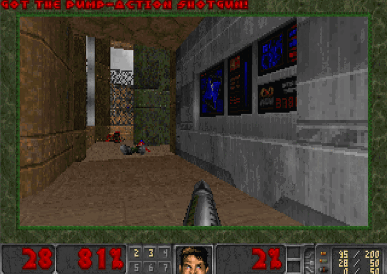
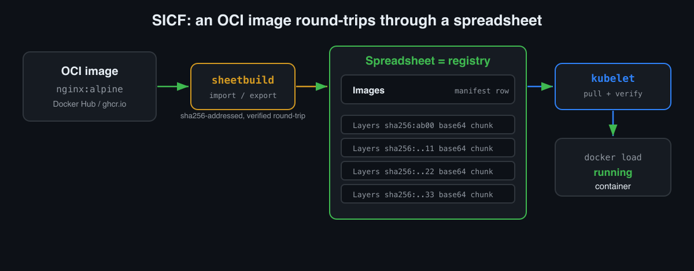
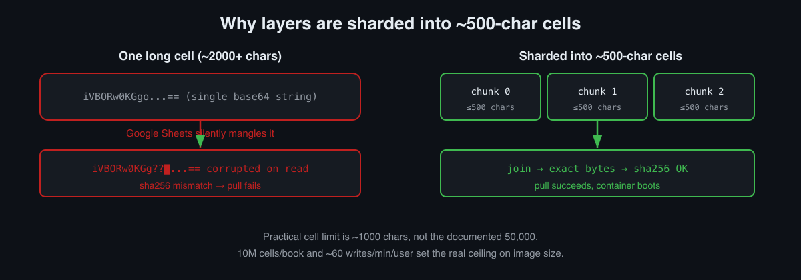

There is a reliable law of the universe: if a thing has a screen and a little memory, someone will eventually run DOOM on it. Oscilloscopes, pregnancy tests, coffee machines, tractors. Let me raise the stakes. My DOOM boots out of spreadsheet cells. Not “a link to a sheet opens a browser toy.” I mean the container image physically lives in the cells, gets rebuilt back into a Docker image from there, is verified by sha256, and runs.
In the first article I wrote about Sheeternetes, a container orchestrator whose entire control plane (Deployments, Nodes, Pods, Events) lives inside a Google Sheet or an Excel file, while real Docker containers run on the other end. That piece mentioned our image format in passing: SICF, “an image that lives in a sheet.” This article is that idea in full. How it works, how to reproduce it step by step, how it goes air-gapped with no internet, and the surprisingly interesting things that showed up once we started shoving real bytes into Google Sheets cells.
Spoiler: the DOOM is real. Chocolate Doom plus the free Freedoom WAD, in a Linux container, played in the browser with a keyboard.

Disclaimer
Do not run this in production. And yes, id Software owns DOOM. We
package only the chocolate-doom engine and the free
freedoom IWAD, both of which come from Debian main. No
piracy, just heresy.
Why an image would live in a sheet at all
A normal container works like this: the manifest says
image: nginx:alpine, the kubelet goes to a registry (Docker
Hub, ghcr.io), pulls the layers, unpacks, runs. Sheeternetes does this
too. It is the default mode and it is fully compatible with the
ecosystem. The image bytes come from a registry; the sheet only holds
desired state.
But there is a second mode, the heretical one. What if there is no registry at all, and the image is stored inside the sheet? Then the sheet is not just the control plane, it is the registry. Fully air-gapped: one workbook that is both the cluster and the image store. That is what our SICF standard (Sheet-Native Image Container Format) describes, and it is what SheetDoom runs on.
The idea is almost insultingly simple:
- An image layer is a
.tar. Take its bytes, base64-encode them, cut them into chunks, and drop the chunks into cells on aLayerstab, addressed bysha256digest. - The image manifest (name, config, list of layers) is one row on an
Imagestab. - The puller reassembles the layers from the cells, joins them,
verifies the digest, unpacks, and
docker loads.
Content-addressable storage, except the blob store is Google Sheets. Same principle as OCI, same sha256, just the least appropriate medium imaginable.

Build real DOOM and hide it in a sheet
Here is the fun part, step by step, all reproducible. You need
Docker, python3 with openpyxl, and two of our
repos side by side: sheetdoom
(the game’s Dockerfile) and sci (which
ships sheetbuild, the reference SICF tool).
The image is an honest Linux DOOM. Here is the whole Dockerfile:
FROM debian:stable-slim
RUN apt-get update && apt-get install -y --no-install-recommends \
chocolate-doom freedoom \
xvfb x11vnc fluxbox novnc websockify tini ca-certificates \
&& rm -rf /var/lib/apt/lists/*
COPY start.sh /usr/local/bin/start.sh
RUN chmod +x /usr/local/bin/start.sh
EXPOSE 8080
ENTRYPOINT ["/usr/bin/tini","--"]
CMD ["/usr/local/bin/start.sh"]start.sh brings up a virtual display (Xvfb), a window
manager (fluxbox), the engine itself, and a VNC-to-web bridge (noVNC) so
you can play in a browser:
export DISPLAY=:0
Xvfb :0 -screen 0 1024x768x24 &
fluxbox &
/usr/games/chocolate-doom -iwad /usr/share/games/doom/freedoom1.wad -window -geometry 1024x768 &
x11vnc -display :0 -forever -shared -nopw -quiet &
exec websockify --web /usr/share/novnc 8080 localhost:5900(One trap that cost me half an hour: on Debian
chocolate-doom installs into /usr/games, which
is not on the PATH of the container’s non-interactive
shell. That gives you a black screen. The fix is the full path to the
binary, which is what you see above.)
Now the trick. Build the image, pack it whole into
cluster.xlsx, delete it locally, bring it
back out of the sheet, and run it. This is the entire
demo.sh, verbatim:
# 1. build real DOOM and save it to a tar
docker build -t doom:shareware .
docker save doom:shareware -o /tmp/doom.tar
# 2. pack the WHOLE image into cluster.xlsx (layers -> base64 in cells, sha256-addressed)
python3 ../sci/tools/sheetbuild.py import /tmp/doom.tar --name doom:shareware --store cluster.xlsx
python3 ../sci/tools/sheetbuild.py ls --store cluster.xlsx
# 3. delete the local image. it now exists ONLY in the spreadsheet.
docker rmi doom:shareware
# 4. rebuild the image FROM THE SPREADSHEET (every layer sha256-verified)
python3 ../sci/tools/sheetbuild.py export doom:shareware --store cluster.xlsx --out /tmp/back.tar
docker load -i /tmp/back.tar
# 5. run DOOM, materialized from the sheet
docker run --rm -p 8080:8080 doom:shareware
# open http://localhost:8080/vnc.html -> Connect -> rip and tearStep 3 is the whole point. After docker rmi the image is
gone locally. It exists only as base64 in the cells of
cluster.xlsx. Step 4 pulls it back, and
docker load does not complain, because the bytes are
identical down to the bit. The digest check inside
sheetbuild export guarantees that. If a single cell had
rotted, the export would fail with a sha256 error instead of handing you
a broken image. The import -> export round-trip is
honest precisely because both ends address content by the same
sha256:.
And there you are, playing DOOM that was just assembled out of a spreadsheet.
The same trick, but inside the cluster
Running it by hand with docker run is a proof of
concept. The real goal is for the cluster itself to
schedule and run an image straight from the sheet. In Sheeternetes you
do that by writing a sicf: scheme instead of a normal image
name.
{
"deployments": [
{ "name": "doom", "image": "sicf:doom:shareware", "replicas": 1, "cpu_req": 200, "mem_req": 128 }
]
}Bring up an on-prem cluster (that is a separate edition, sheeternetes-onprem,
which runs over an .xlsx with no internet at all) and apply
the manifest:
# terminal 1: apiserver over cluster.xlsx
WORKBOOK=cluster.xlsx TOKEN=secret python3 apiserver.py
# terminal 2: kubelet. this host becomes a node
./kubelet.sh
# terminal 3:
./skctl apply doom.json # image: sicf:doom:shareware
./skctl get pods # doom-1 RunningWhat happened under the hood: the scheduler placed the pod on a node,
the kubelet saw the sicf: prefix, and instead of going to
Docker Hub it went into the same sheet. It pulled the
layers out of the cells, verified each sha256, ran
docker load, and started the container. Not one external
request. Image store, registry, scheduler, and desired state, all in one
workbook.
Resolving a sicf: image is literally a few lines in the
kubelet:
case "$image" in
sicf:*) image="$(python3 "$here/sicf.py" "$WEBAPP_URL" "$TOKEN" "$image")" \
|| { echo "[kubelet] FAILED to resolve $image"; continue; } ;;
esacAfter that it is a plain docker run with the resolved
local tag. Execution is always on the node. The sheet stores the image
and schedules the pod, but it never executes anything itself.

Findings: what happens when you seriously push bytes into Google Sheets
This is where it got educational. An Excel file on disk is one thing
(openpyxl writes cells and everything is predictable). A
live Google Sheet is another animal with its own
temperament. I moved the SICF store into Google Sheets and collected a
set of gotchas, each one a small lesson about distributed systems.
1. Google Sheets silently corrupts long single-cell strings
The first version wrote a whole base64 layer into one cell. On paper
that is fine: the docs promise 50,000 characters per
cell. In practice, somewhere past ~2,000 characters Google
Sheets starts silently mangling a long string, and reading it back gives
you the wrong bytes. Not an error, not a truncation with a warning, just
quiet corruption. For a content-addressable store that is fatal: you
join the layer, compute the sha256, it does not match,
export fails.
The fix is sharding. Cut the base64 into ~500-character chunks, one per cell, and join on read. After that the digest matches, the layer reassembles, the container boots.

Here is what it looks like on a real example. I imported a tiny
hello-world image (a ~2.6 KB layer) into a Google Sheet.
Its single layer landed on the Layers tab as nine
500-character chunks:
| digest | ordinal | media_type | data |
|---|---|---|---|
sha256:58dee6a4…cfb6d6 |
0 | application/vnd.oci.image.layer.v1.tar |
H4sIAAAAAAAA… (500 chars) |
sha256:58dee6a4…cfb6d6 |
1 | … |
… (500 chars) |
| … | … | … | … |
sha256:58dee6a4…cfb6d6 |
8 | … |
… (tail) |
The puller reads the chunks in ordinal order, joins
them, computes sha256 over the reassembled
.tar, checks it against the digest from the
row, and only then hands the bytes to the runtime. Same layer Docker
had, exactly the same bytes.
2. The real per-cell limit is a thousand, not 50,000
After the corruption I stopped trusting documented limits and started
measuring. The practical safe cell size for binary base64 in Google
Sheets is around 1,000 characters, not 50,000. We keep
a conservative ~500 with headroom. sheetbuild even exposes
this as an env var, SICF_MAX_CELL (default 30,000, safe for
.xlsx where Excel’s limit is 32,767), but for the Google
backend we shard far smaller.
3. The real ceiling on image size is quotas, not cells
A Google Sheets workbook holds 10 million cells. Sounds like a lot. But sharded at 500 chars, one megabyte of image is ~2,000 cells of data alone. A real DOOM image (Debian + X + noVNC + the engine) is a couple hundred megabytes, which is many thousands of cells, and the file starts to feel heavy. On top of that the Sheets API has write quotas (on the order of 60 requests per minute per user), so uploading a big image is also an exercise in batching and patience.
The honest takeaway: native SICF mode in Google Sheets is for
small images. Static Go/Rust binaries,
scratch/alpine, and especially WASM modules
(which fit beautifully). Full DOOM is happy in an .xlsx on
disk (no network quotas there), but in a cloud sheet it is a heavy
guest. Exactly how many images fit in Excel before it begs for mercy is
something we are measuring for real in sci#5. It is a
proper load test and it is worth doing.
4. Bonus: concurrent editing just works
A pleasant surprise. Google Sheets uses operational transformation under the hood for collaborative editing, and that maps unexpectedly well onto our use case. Dozens of people can open a cluster sheet read-only at once, and the live running state (pods coming and going, nodes changing status) updates for all of them at the same time. We watched ~100 simultaneous viewers with no degradation. We got a free multiplayer dashboard, the rare case where a cursed substrate hands you a feature you would otherwise have to build by hand.
About size, honestly
A full Linux DOOM in base64 is thousands of cells. It fits under the 10M-cell limit, but the file is heavy and Excel/Sheets feel it. For a snappier demo a minimal framebuffer or ASCII DOOM build shrinks it a lot, and the WAD alone is only a few megabytes. We deliberately built the heavy, real one, because the point was to prove that what lives in the cells is not a toy but a genuine image with a whole Linux userland. It lives there. It comes back out. It runs.
What this actually proves (besides that I need sleep)
Under the absurdity there is perfectly ordinary engineering, and it is a great way to explain serious things:
- Content-addressable storage. Why image layers have
digests, and why that is not decoration: a single rotted cell is caught
at
sha256before it can corrupt the runtime. - A registry is just a content-addressed blob store. We swapped the blob store for cells and got a working registry. Docker Hub does the same thing, its blobs just live in S3 instead of Google Sheets.
- Air-gapped distribution. One workbook is cluster
plus registry. Zero external calls, which is exactly what closed
environments need (normal people use an isolated Harbor, we use an
.xlsx). - The medium’s limits decide everything. The documented limit and the practical limit are different numbers. Measure, do not take the docs at their word.
None of this belongs in production. But as a way to genuinely understand OCI and CRI from the inside, it works surprisingly well. And now I have a DOOM that reconciles.
Next up: SheetsOperator, a real operator for Google Sheets (control plane, controller, self-healing), and a public sheet that is always the 3rd of September and repairs a pixel portrait of a Russian singer no matter what you do to it.
Join in
All of this is open source and alive. The community is international and English-speaking, so join from anywhere.
- 🔫 SheetDoom: github.com/sncfoundation/sheetdoom
- 📦 The SICF/SCRI standard: github.com/sncfoundation/sci
- 💬 Slack sheetncf, Telegram t.me/stncf, LinkedIn company/sheetncf
- 🌐 All the code: github.com/sncfoundation
It reconciles. Rip and tear.